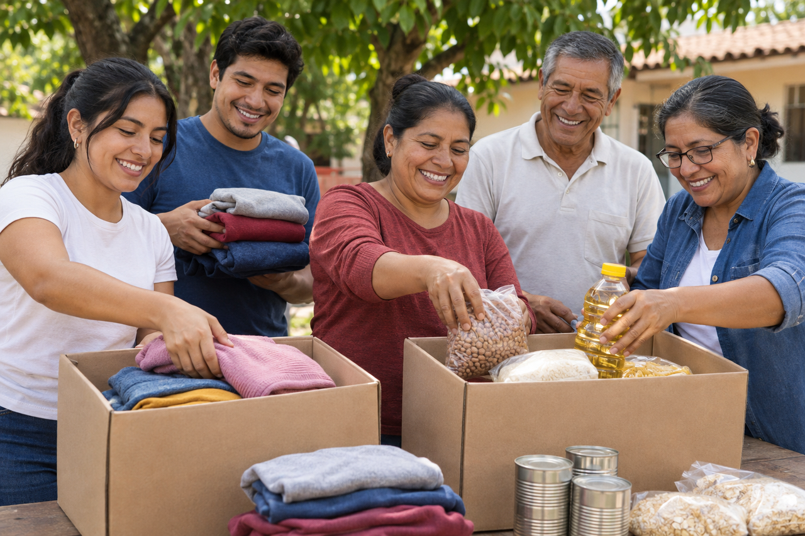

Donaciones y campañas solidarias
Tu ayuda puede
cambiar un día.
Encuentra una campaña para aportar ropa, alimentos o juguetes y apoyar a personas de tu comunidad.
Empieza por conocer qué necesita cada campaña.

Juntos llegamos más lejos
Una campaña. Muchas manos.
Antes de llevar tu donación
Tres pasos para hacer la diferencia
Revisa qué se necesita
y dónde puedes entregarlo.
Empieza por revisar el objetivo, los artículos solicitados y la fecha límite de una campaña.
Consultar campañasNuestro propósito
La solidaridad se construye
en comunidad.
Una campaña debe explicar a quién ayuda, qué necesita y cómo colaborar. Organiza esos datos para que otras personas sepan cómo aportar.
Pequeños aportes, nuevas posibilidades
Hay muchas formas de ayudar.
Ropa en buen estadoAlimentos no pereciblesJuguetes completos